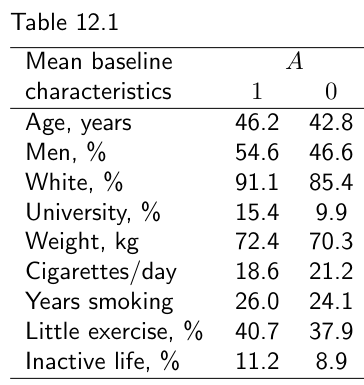
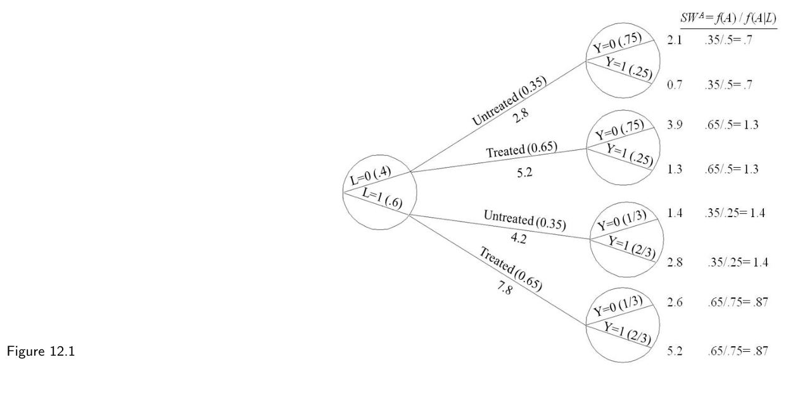

第二部分 · 基于模型的因果推断 · Part II — Causal inference with models
第 12 章 · 逆概率加权与边际结构模型
Hernán MA, Robins JM（2020）. Causal Inference: What If. Chapter 12. 本页为中文全文翻译，附译注。
第二部分全篇围绕一个因果问题组织："戒烟对体重增加的平均因果效应是什么？"本章要讲的，就是如何用 IP 加权从观察性数据里把这个效应估计出来。IP 加权在第 2 章已经出场，但当时我们只把它描述为一种非参数方法。现在我们要讨论模型与 IP 加权的联手使用——在附加假设之下，这套组合使我们能够应对协变量众多、处理变量非二值的高维问题。
估计戒烟对体重增加的影响，我们会用 NHEFS 的真实数据。NHEFS 是（准备好听一个很长的名字了吗？）National Health and Nutrition Examination Survey Data I Epidemiologic Follow-up Study 的缩写。NHEFS 由美国国家卫生统计中心（National Center for Health Statistics）与国家老龄研究所（National Institute on Aging）联合发起，美国公共卫生服务局的其他机构也参与了合作。NHEFS 的详细说明，连同公开可得的数据集与文档，可以在 wwwn.cdc.gov/nchs/nhanes/nhefs/ 查到。从本章往后，我们会使用本书网站上提供的 NHEFS 数据子集。我们欢迎读者对我们的分析提出改进与完善。
12.1 因果问题
我们的目标是估计戒烟（处理）A 对体重增加（结局）Y 的平均因果效应。为此，我们使用 NHEFS 中 1566 名年龄在 25 至 74 岁之间的香烟吸烟者的数据；这些人在 NHEFS 中都完成了基线访视，以及大约十年之后的一次随访访视。若某人自述在随访访视之前已经戒烟，就把他划为已处理 A = 1，否则划为未处理 A = 0。每个人的体重增加 Y 以千克计，定义为随访访视时的体重减去基线访视时的体重。大多数人都增了重，但戒烟者平均增重更多。戒烟者的平均体重增加为 E[Y|A = 1] = 4.5 千克，未戒烟者为 E[Y|A = 0] = 2.0 千克。因此 E[Y|A = 1] − E[Y|A = 0] 的估计值是 2.5，95% 置信区间从 1.7 到 3.4。
我们把分析限制在这样一批人身上：他们在基线（1971—1975 年）与随访（1982 年）两次访视中，性别、年龄、种族、体重、身高、教育程度、饮酒情况与吸烟强度均为已知，并且在基线时回答了病史问卷。见精细辨析 12.1。
我们把 E[Ya=1] 定义为：如果人群中所有个体都在随访访视前戒了烟，本应被观测到的平均体重增加；把 E[Ya=0] 定义为：如果所有个体都没有戒烟，本应被观测到的平均体重增加。我们把加性尺度上的平均因果效应定义为 E[Ya=1] − E[Ya=0]，也就是"如果人人都接受处理"与"如果人人都不接受处理"这两种情形下平均体重之差。这就是本章以及接下来几章我们主要关心的因果效应。
本节第一段估计出来的关联差 E[Y|A = 1] − E[Y|A = 0]，一般不同于因果差 E[Ya=1] − E[Ya=0]。如果戒烟者与未戒烟者在某些影响体重增加的特征上存在差异，那么关联差一般就没有因果解释。举个例子：戒烟者平均比未戒烟者大 4 岁（戒烟者年龄超过 50 岁的可能性比未戒烟者高 44%），而无论戒不戒烟，年长者增重都比年轻者少。我们说年龄是 A 对 Y 效应的（替代）混杂因素（surrogate confounder，参见精细辨析 7.3），我们的分析需要对年龄作调整。未调整的估计值 2.5 可能低估了真实的因果效应 E[Ya=1] − E[Ya=0]。

A = 1）与未戒烟者（A = 0）的基线特征均值：年龄 46.2 对 42.8 岁，男性 54.6% 对 46.6%，白人 91.1% 对 85.4%，上过大学 15.4% 对 9.9%，体重 72.4 对 70.3 千克，每日吸烟 18.6 对 21.2 支，吸烟年数 26.0 对 24.1 年，很少运动 40.7% 对 37.9%，体力活动不足 11.2% 对 8.9%。如表 12.1 所示，戒烟者与未戒烟者在性别、种族、教育、基线体重、吸烟强度等其他变量的分布上也有差异。如果这些变量是混杂因素，它们同样需要在分析中加以调整。第 18 章讨论混杂因素选择的各种策略。这里我们假定下列 9 个变量（全部在基线测量）足以完成混杂调整：性别（0：男，1：女）、年龄（岁）、种族（0：白人，1：其他）、教育程度（5 类）、吸烟强度与吸烟时长（每日支数与吸烟年数）、日常生活中的体力活动（3 类）、休闲运动（3 类）、体重（千克）。也就是说，L 表示由 9 个测量协变量构成的向量。下一节我们用 IP 加权来调整这些协变量。
边注 代码：Program 12.1。计算本节给出的描述性统计。
12.2 通过建模估计 IP 权重
IP 加权构造出一个伪人群（pseudo-population），其中从协变量 L 指向处理 A 的那条箭头被抹掉了。更精确地说，这个伪人群具有以下两条性质：A 与 L 统计独立；伪人群中的均值 Eps[Y|A = a] 等于真实人群中的标准化均值 ∑l E[Y|A = a, L = l] Pr[L = l]。即使条件可交换性 Ya ⊥⊥ A|L 在真实人群中并不成立，这两条性质照样为真（见技术要点 2.3）。而如果条件可交换性 Ya ⊥⊥ A|L 在真实人群中成立，那么这两条性质就意味着：(i) Ya 的均值在两个人群中相同；(ii) 无条件可交换性（即无混杂）在伪人群中成立；(iii) 真实人群中的反事实均值 E[Ya] 等于伪人群中的 Eps[Y|A = a]；(iv) 在伪人群中，关联即因果。如果你需要重温 IP 加权，请回到第 2 章。
非正式地说，伪人群是这样造出来的：给每个个体一个权重，等于"他实际收到的那个处理水平，在给定协变量条件下的概率"的倒数。处理 A 的个体特异性 IP 权重定义为 WA = 1/f(A|L)。对我们的二值处理 A，IP 权重的分母 f(A|L) 对戒烟者是给定所测混杂因素后戒烟的条件概率 Pr[A = 1|L]，对未戒烟者是给定所测混杂因素后不戒烟的条件概率 Pr[A = 0|L]。我们只需估计 Pr[A = 1|L]，因为 Pr[A = 0|L] = 1 − Pr[A = 1|L]。
边注 处理的条件概率 Pr[A = 1|L] 被称为倾向性评分（propensity score）。关于倾向性评分的更多内容见第 15 章。
在 2.4 节里，我们曾以非参数方式估计 Pr[A = 1|L]：只要在 L 的每一层里数一数接受处理（A = 1）的人数，再除以该层的个体数即可。计算所需的全部信息都来自一棵带 4 个分支（L 的 2 个分支乘以 A 的 2 个分支）的、按因果解释的树状图。但像我们这个例子这样，混杂因素众多、其中若干还有许多水平时，非参数估计 Pr[A = 1|L] 根本行不通。即便我们愿意把除年龄以外的 9 个混杂因素全部重编码成至多 6 类，树也仍然有超过 200 万个分支；如果按吸烟时长、吸烟强度和体重的实际取值范围来分层，还要再多个几百万。当 1566 个个体散布在数百万个层中，我们得不到有意义的非参数分层估计。只能求助于建模。
要在 L 所定义的数百万个层中拿到 Pr[A = 1|L] 的参数化估计，我们拟合了一个戒烟概率的 logistic 回归模型，把 9 个混杂因素全部作为协变量放进去。对于（准）连续的协变量——年龄、体重、吸烟强度、吸烟时长——我们用了线性项与二次项；协变量之间不放任何乘积项。也就是说，我们的模型把 Pr[A = 1|L] 的可能取值限制成如下形态：在 logit 尺度上，连续协变量与戒烟风险之间的条件关系可以由一条抛物线表示，并且每个协变量对（风险 logit 的）贡献都独立于其他协变量的贡献。在这些参数化限制之下，我们得以对 L 的每一种取值组合给出估计值 Prc[A = 1|L]，从而对研究人群中 1566 个个体中的每一个都给出一个估计值。
下一步是计算由估计出的 IP 权重所构造的伪人群中的差值 Êps[Y|A = 1] − Êps[Y|A = 0]。如果伪人群中 A 的效应不存在混杂，并且 Pr[A = 1|L] 的模型是正确的，那么关联即因果，伪人群中关联差 Eps[Y|A = 1] − Eps[Y|A = 0] 的无偏估计量，同时也是真实人群中因果差 E[Ya=1] − E[Ya=0] 的无偏估计量。
边注 E[Y|A] = θ0 + θ1A 是一个饱和模型，因为它有 2 个参数 θ0 和 θ1 用来估计两个量 E[Y|A = 1] 与 E[Y|A = 0]。在该模型中 θ1 = E[Y|A = 1] − E[Y|A = 0]。
我们估计 Eps[Y|A = 1] − Eps[Y|A = 0] 的做法，是在伪人群数据上用加权最小二乘法拟合（饱和的）线性均值模型 E[Y|A] = θ0 + θ1A，其中个体按其估计的 IP 权重加权：戒烟者取 1/Prc[A = 1|L]，未戒烟者取 1/(1 − Prc[A = 1|L])。参数估计 θ̂1 为 3.4。也就是说，我们估计戒烟平均使体重增加 θ̂1 = 3.4 千克。估计量的形式定义见技术要点 12.1。
边注 代码：Program 12.2。估计出的 IP 权重 WA 取值从 1.05 到 16.7，均值为 2.00。
边注 权重为 W 的加权最小二乘估计 θ̂0、θ̂1 是 ∑i Wi[Yi − (θ0 + θ1Ai)]2 的极小化点。若所有个体 i 都取 Ŵi = 1，我们得到的就是上一章描述的普通最小二乘估计。
要为点估计 θ̂1 = 3.4 求一个 95% 置信区间，需要某种能把 IP 加权计入的方法。一种可能是用统计理论推导出相应的方差估计量。这条路要求数据分析者自己动手编写估计量程序，标准统计软件里通常没有现成的。另一种可能是用非参数自助法（nonparametric bootstrapping，见技术要点 13.1）来近似方差；面对大数据库，这条路需要足够的计算资源，或者足够的耐心。第三种可能是使用稳健方差估计量（robust variance estimator，例如 GEE 模型在独立工作相关结构下所用的那种），这是绝大多数统计软件包里的标准选项。
基于稳健方差估计量的 95% 置信区间是有效的，但与前面提到的解析估计量和自助法估计量不同，它是保守的——它覆盖超级总体参数的概率高于 95%。θ̂1 的这个保守 95% 置信区间是 (2.4, 4.5)。本章中，IP 加权估计的所有置信区间都是保守的。若 Pr[A = 1|L] 的模型设定有误，θ0 与 θ1 的估计就会有偏，而且正如上一章讨论过的，置信区间覆盖真值的比例可能低于 95%。
12.3 稳定化 IP 权重
IP 加权的目标，是造出一个 L 与 A 之间不存在关联的伪人群。在第 2 章里，我们展示了如何用 IP 权重 WA = 1/f(A|L) 把图 2.1 中的原始研究人群变成图 2.3 中的伪人群。伪人群的规模是原始研究人群的两倍，这反映了权重 WA 的均值为 2 这样一个事实。非正式地说，这些权重模拟出的伪人群，是由原研究人群的两份拷贝拼成的，一份接受处理，另一份不接受处理。
不过，造出"与 L 独立"这一伪人群，还有别的办法。比如，可以造出这样一个人群：不论 L 取何值，每个人接受 A = 1 的概率都是 0.5，接受 A = 0 的概率也都是 0.5。这样的人是用 IP 权重 0.5/f(A|L) 造出来的。这个伪人群的规模与研究人群相同；如果把所有权重都除以 2，它在代数上就等于上一段那个伪人群。因此，权重 0.5/f(A|L) 的期望均值是 1，而用 0.5/f(A|L) 造出的伪人群所得到的效应估计，与用 1/f(A|L) 造出的伪人群所得完全相同。（你可以用图 2.1 的数据实证检验这一点，或者看技术要点 12.2 的证明。）对任何其他形式的 IP 权重 p/f(A|L)（0 < p ≤ 1）也是一样的。权重 WA = 1/f(A|L) 只是 p = 1 这一族 IP 权重中的一个特例。
再把思路推进一步。做混杂调整的关键要求是：在伪人群中，处理 A 的概率不依赖于混杂因素 L。我们可以给伪人群中的每个人指派同一个概率 p 来达到这一点。但我们也可以靠另一种办法：造出这样一个人群，其中不同的人有不同的处理概率，只要这个概率不依赖于 L 的取值就行。一种常见做法是：给已处理者指派原人群中接受处理的概率 Pr[A = 1]，给未处理者指派原人群中不接受处理的概率 Pr[A = 0]。于是 IP 权重对已处理者是 Pr[A = 1]/f(A|L)，对未处理者是 Pr[A = 0]/f(A|L)，更紧凑地写成 f(A)/f(A|L)。

SWA = f(A)/f(A|L) 作用于图 2.1 的数据后得到的伪人群。Pr[A = 1] = 13/20 = 0.65，Pr[A = 0] = 7/20 = 0.35。左侧圆圈为 L 的两层（L = 0 占 0.4，L = 1 占 0.6），中间分支标出处理分配及其概率，右侧圆圈内是 Y 的分裂；每个节点旁标出该分支的伪人群规模，最右侧一列是权重值，例如 65/.5 = 1.3。在第 3 章的可识别性条件下，这个伪人群类似于一项假想的随机化试验：研究人群中 65% 的人被随机分到 A = 1，35% 分到 A = 0。图 12.1 展示的就是把 IP 权重 f(A)/f(A|L) 作用于图 2.1 数据后得到的伪人群，其中 Pr[A = 1] = 13/20 = 0.65，Pr[A = 0] = 7/20 = 0.35。在第 3 章的可识别性条件下，这个伪人群就像一项假想的随机化试验：研究人群中 65% 的人被随机分配到 A = 1，35% 分配到 A = 0。注意，为保持 65/35 的比例，每个分支上的个体数不可能是整数。所幸，在数学里，半个人不算什么大事。
在我们的戒烟例子中，IP 权重 f(A)/f(A|L) 的取值范围是 0.33 到 4.30，而 IP 权重 1/f(A|L) 的取值范围是 1.05 到 16.7。分子里那个起稳定化作用的因子 f(A)，正是 f(A)/f(A|L) 这一权重范围更窄的原因。IP 权重 WA = 1/f(A|L) 被称为非稳定化权重（nonstabilized weights），IP 权重 SWA = f(A)/f(A|L) 被称为稳定化权重（stabilized weights）。稳定化权重的均值期望为 1，因为伪人群的规模与研究人群相同。
边注 在数据分析中，应当检查估计出的权重 SWA 的均值是否为 1（Hernán 与 Robins 2006a）。偏离 1 提示模型设定有误，或可阳性性被违反、或接近违反。检查可阳性性的更多内容见精细辨析 12.2。
现在我们用稳定化 IP 权重 SWA 重新估计一次戒烟对体重的影响。首先，我们需要一个 Pr[A = 1|L] 的估计值来构造权重的分母。我们沿用 12.2 节中那个 logistic 模型，为研究人群中的 1566 个个体各自求出参数估计值 Prc[A = 1|L]。其次，我们需要 Pr[A = 1] 的估计值来构造权重的分子。这个值可以非参数地估计为比值 403/1566；等价地，也可以拟合一个带截距、不含任何协变量的饱和 logistic 模型来估计 Pr[A = 1]。最后，我们把均值模型 E[Y|A] = θ0 + θ1A 拟合到伪人群数据上，个体按其估计的稳定化 IP 权重加权：戒烟者取 Prc[A = 1]/Prc[A = 1|L]，未戒烟者取 (1 − Prc[A = 1])/(1 − Prc[A = 1|L])。在我们的假设下，我们估计戒烟平均使体重增加 θ̂1 = 3.4 千克（95% 置信区间：2.4, 4.5）。这与此前用非稳定化 IP 权重 WA 得到的估计完全一样。
边注 代码：Program 12.3。估计出的 IP 权重 SWA 取值从 0.33 到 4.30，均值为 1.00。
既然非稳定化与稳定化 IP 权重给出同一个估计，为什么还要用稳定化权重？因为稳定化权重通常会带来比非稳定化权重更窄的 95% 置信区间。不过，稳定化权重在统计上的这种优势，只有当（IP 加权后的）模型不是饱和模型时才出现。在我们上面的例子中，两参数模型 E[Y|A] = θ0 + θ1A 是饱和的，因为处理 A 只能取 2 个值。在许多场合（例如时变处理或连续处理），加权模型不可能是饱和的，因此就会用上稳定化权重。下一节讲稳定化权重在连续处理上的用法。
12.4 边际结构模型
考虑处理水平 a 下平均结局的如下线性模型：
E[Ya] = β0 + β1a
这个模型与我们迄今为止描述过的所有模型都不同：它的结局变量是反事实的，因而一般无法观测。所以，这个模型无法拟合到任何真实研究的数据上。凡是针对反事实结局的边际均值所建立的模型，都称为边际结构模型（marginal structural model）。
边注 这是二值处理 A 的一个（饱和）边际结构均值模型。
结构均值模型中处理的参数对应的是平均因果效应。在上面这个模型里，参数 β1 等于 E[Ya=1] − E[Ya=0]，因为在 a = 0 时 E[Ya] = β0，在 a = 1 时 E[Ya] = β0 + β1。在前几节中，我们估计的正是戒烟 A 对体重变化 Y 的平均因果效应 E[Ya=1] − E[Ya=0]。换句话说，我们估计的是一个边际结构模型的参数 β1。具体地说，我们用 IP 加权构造出一个伪人群，再用 IP 加权最小二乘法把模型 E[Y|A] = θ0 + θ1A 拟合到伪人群数据上。在我们的假设下，伪人群中关联即因果。也就是说，IP 加权后的关联模型 E[Y|A] = θ0 + θ1A 的参数 θ1，可以被赋予与结构模型 E[Ya] = β0 + β1a 的参数 β1 相同的因果解释。由此可知，伪人群中关联参数 θ1 的一致估计 θ̂1，也是人群中因果效应 β1 = E[Ya=1] − E[Ya=0] 的一致估计量。
边际结构模型 E[Ya] = β0 + β1a 是饱和的，因为处理 A（戒烟）是二值的。也就是说，方程两侧各有两个未知量：左侧是 E[Ya=1] 与 E[Ya=0]，右侧是 β0 与 β1。因此，只要在伪人群里算一算样本均值，就足以估计我们关心的因果效应。但处理往往是多值的或连续的。例如，考虑一项新处理 A"吸烟强度的变化"，定义为 1982 年每日吸烟支数减去基线时每日吸烟支数。处理 A 现在可以取很多值，比如 −25 表示某人把每日吸烟支数减少了 25 支，40 表示某人把每日吸烟支数增加了 40 支。假设我们感兴趣的是：在基线时每日吸烟不超过 25 支的那 1162 名个体中，不同吸烟强度变化下的平均体重变化之差。也就是说，我们想对任意 a 与 a′ 估计 E[Ya] − E[Ya′]。
边注 边际结构模型一个称心的性质是秩保持（null preservation，见第 9 章）：当"平均因果效应为零"的零假设为真时，边际结构模型永不错设。例如，在这一零假设下，边际结构模型 E[Ya] = β0 + β1a + β2a2 在 β1 = β2 = 0、β0 = E[Ya]（对任意 a）时是正确设定的。若条件可交换性成立，则 E[Y] = β0。
由于处理 A 可以取几十个值，配上同样多个参数的饱和模型就变得不切实际。我们不得不考虑一个非饱和的结构模型，来刻画处理 A 对平均结局 Y 的剂量-反应曲线。如果我们相信一条抛物线足以恰当地描述这条剂量-反应曲线，那么我们会提出边际结构模型
E[Ya] = β0 + β1a + β2a2
其中 a2 = a × a 是 a 的平方，而 E[Ya=0] = β0 是 a = 0 时的平均体重增加，也就是基线到 1982 年间吸烟强度没有变化时的平均增重。
边注 这是连续处理 A 的一个（非饱和）边际结构均值模型。
假设我们想估计"每日吸烟增加 20 支"相对于"无变化"的平均因果效应，即 E[Ya=20] − E[Ya=0]。按我们的结构模型，E[Ya=20] = β0 + 20β1 + 400β2，于是 E[Ya=20] − E[Ya=0] = 20β1 + 400β2。现在我们需要估计参数 β1 与 β2。为此，我们需要估计稳定化权重 SWA，以构造出没有 L 混杂的伪人群，然后把关联模型 E[Y|A] = θ0 + θ1A + θ2A2 拟合到伪人群数据上。
要估计稳定化权重 SWA = f(A)/f(A|L)，我们需要估计 f(A|L)。对二值处理 A，f(A|L) 是一个概率，所以我们用 logistic 模型估计 Pr[A = 1|L]。对连续处理 A，f(A|L) 就是一个概率密度函数（pdf）。遗憾的是，pdf 一般很难估计，特别是当 L 高维且含连续成分时——这也正是对连续处理使用 IP 加权往往很危险的原因。在我们的例子里，我们假定密度 f(A|L) 是正态（高斯）的，均值为 μL = E[A|L]，方差恒为 σ2。于是我们用线性回归模型估计所有 L 取值组合下的 E[A|L]，以及残差方差 σ2。我们同时假定分子中的密度 f(A) 也是正态的。
边注 代码：Program 12.4。估计出的 SWA 取值从 0.19 到 5.10，均值为 1.00。我们假定了方差恒定（同方差性），这在查看残差图之后显得是合理的。换用别的分布假设（例如带异方差的截断正态）得到了相近的估计。
边注 开发出能更稳定地估计 IP 权重的各种方法仍是一个活跃的研究领域。可参见 Imai 与 Ratkovic（2015）、Wang 与 Zuberburieta（2020）、Kallus 与 Santacatterina（2018）、Avagyan 与 Vansteelandt（2021）的工作。
在对连续处理使用 IP 加权时应当格外小心，因为效应估计可能对用于估计条件密度 f(A|L) 的模型或算法极其敏感。我们用 IP 加权得到的边际结构模型参数估计是 β̂0 = 2.005、β̂1 = −0.109、β̂2 = 0.003。按这些估计，如果所有个体在基线到 1982 年间都保持吸烟强度不变，平均体重增加为 2.0 千克（95% 置信区间 1.4, 2.6）；如果所有个体都把每日吸烟量增加 20 支，平均体重增加为 0.9 千克（95% 置信区间 −1.7, 3.5）。
也可以为二值结局构造边际结构模型。比如，若感兴趣的是戒烟 A（1：是，0：否）对 1992 年前死亡风险 D（1：是，0：否）的因果效应，可以考虑这样的边际结构 logistic 模型：
logit Pr[Da = 1] = α0 + α1a
其中 exp(α1) 是戒烟相对于不吸烟的死亡因果比值比。在我们的假设下，这个模型的参数可以通过在 IP 加权所构造的伪人群上拟合 logistic 模型 logit Pr[D = 1|A] = θ0 + θ1A 而得到一致估计。我们估计的因果比值比为 exp(θ̂1) = 1.0（95% 置信区间：0.8, 1.4）。
边注 这是二值处理的饱和边际结构 logistic 模型。若处理是连续的，则需要设定一个非饱和的 logistic 模型。
边注 代码：Program 12.5。
12.5 效应修饰与边际结构模型
当目标参数是人群中的平均因果效应时，边际结构模型中不包含协变量。不过，人们可以往边际结构模型里放入协变量——这些协变量未必是混杂因素——以考察效应修饰。假设我们猜想戒烟的效应随性别 V（0：男，1：女）而变化。为检验这个猜想，我们把协变量 V 加进边际结构均值模型：
E[Ya|V] = β0 + β1a + β2Va + β3V
若 β2 ≠ 0，就存在加性效应修饰。严格说来，这一模型已经不再是边际模型了——因为它条件于 V——但"边际结构模型"这个叫法仍然照用。
我们可以通过加权最小二乘法拟合线性回归模型 E[Y|A, V] = θ0 + θ1A + θ2VA + θ3V 来估计模型参数，权重取 WA 或 SWA。在多数场合，协变量向量 L 应当包含 V。即便 V 与 A 在给定 L 其余成分的条件下是独立的、且 V 并不为保证可交换性所必需，把 V 放进 L 通常仍会提高边际结构模型参数估计的效率。
边注 参数 β3 一般没有关于 V 效应的因果解释。要记住：我们假定的是处理 A 满足可交换性、可阳性性与一致性，而不是性别 V 满足这些条件。
因为我们现在考虑的是 V 各水平内部的处理效应模型，所以在稳定化权重的分子里，可以选择用 f[A]，也可以选择用 f[A|V]。基于稳定化权重 SWA(V) = f[A|V] / f[A|L] 的 IP 加权，一般会使效应估计的置信区间更窄。稳定化权重 SWA(V) 之所以一般能带来更高的统计效率，直觉是这样的：权重 SWA(V) 的方差小于权重 SWA 的方差。估计 SWA(V) 的做法与估计 SWA 完全一样，只是在权重的分子那个 logistic 模型中额外加入协变量 V。
研究者选择要放进边际结构模型的那部分 L 的子集 V，只应当反映研究者的实质性兴趣。举个例子：只有当研究者既相信 V 可能是效应修饰因子，又比"整个人群中的因果效应"更关心"V 各水平内部的处理因果效应"时，V 才应当被放进边际结构模型。在我们的例子里，我们没有找到性别存在效应修饰的强证据，因为参数估计 θ̂2 的 95% 置信区间是 (−2.2, 1.9)。如果研究者选择把 L 中的所有变量都放进边际结构模型，那么稳定化权重 SWA(L) 等于 1，IP 加权变得不必要——因为在条件可交换性下，此时的边际结构模型就是那个（不加权的）结局回归模型，而它已经充分调整了 L 所带来的全部混杂（见第 15 章）。出于这个原因，我们略带幽默地把那种条件于为保证可交换性所需的全部变量 L 的边际结构模型称作伪边际结构模型（faux marginal structural model）。
边注 代码：Program 12.6。
边注 如果我们感兴趣的是两项处理 A 与 B 之间的交互作用（而不是处理 A 被变量 V 修饰，见第 5 章），那么我们会在边际结构模型中同时放入 A 与 B 的参数，并且用两项处理的联合概率作为分母来估计 IP 权重。此时我们对 A 与 B 都假定可交换性、可阳性性与一致性。
第一部分我们讨论过，效应修饰与混杂在逻辑上是两个不同的概念。尽管如此，许多学生仍难以理解这一区分，因为同一套统计方法——分层（第 4 章）或回归（第 15 章）——既常被用于混杂调整，也常被用于检出效应修饰。因此，用边际结构模型来讲授这两个概念或许有一定好处：在这里，用于混杂调整的方法（IP 加权）与用于检出效应修饰的方法（在边际结构模型里加入处理与协变量的乘积项）是彼此分明的。
12.6 删失与缺失数据
在估计戒烟 A 对体重增加 Y 的因果效应时，我们把分析限制在 1982 年随访结束时测到体重的 1566 名个体身上。然而，另有 63 名个体满足了我们的纳入标准，却因为 1982 年的体重未知而被排除在分析之外。只挑选结局值不缺失的个体——也就是把缺失者从分析中删失掉——可能引入第 8 章讨论过的选择偏倚。
令删失变量 C 为"1982 年是否测到体重"的指示变量：体重未测到时 C = 1（即被删失），测到时 C = 0（即未被删失）。我们的分析必然被限制在未删失的个体，也就是 C = 0 的那些人，因为只有他们的结局 Y 是已知的。也就是说，在 12.2 与 12.4 节中，我们拟合的并不是（加权的）结局回归模型 E[Y|A] = θ0 + θ1A，而是限制在 C = 0 个体上的模型 E[Y|A, C = 0] = θ0 + θ1A。
遗憾的是，即便在零假设下，只挑未删失者做分析也会在 C 位于处理 A 与结局 Y 之间某条路径上的碰撞因子、或是某个碰撞因子的后代时产生偏倚。可参见图 8.3 至 8.6 的因果图。我们的数据与那些图所描绘的结构相符：处理 A 与删失 C 相关——戒烟者中有 5.8% 被删失，未戒烟者中有 3.2% 被删失——而且 Y 的至少某些预测因子也与 C 相关：被删失者的基线平均体重是 76.6 千克，未被删失者则是 70.8 千克。
由于失访造成的删失可能引入选择偏倚，我们一般感兴趣的是"假如研究人群中没有人被删失"时的因果效应。在我们的例子里，目标于是变成估计：如果所有人都戒烟且没有人的结局被删失，平均体重增加是多少，即 E[Ya=1,c=0]；以及如果所有人都没有戒烟且没有人的结局被删失，平均体重增加是多少，即 E[Ya=0,c=0]。此时感兴趣的因果效应是 E[Ya=1,c=0] − E[Ya=0,c=0]，正如第 8 章讨论的，这是 A 与 C 的联合效应。上标 c = 0 把一件事讲得明白：许多人在说"处理 A 的因果效应"时，心里想的正是这个因果对比，只不过他们未必真把上标 c = 0 写出来。
边注 删失与处理的联合 IP 权重是 WA,C = WA × WC，其中未删失个体的 WC = 1/Pr[C = 0|L, A]，被删失个体的 WC = 0。A 与 C 的联合密度被分解为 f(A, C = 0|L) = f(A|L) × Pr[C = 0|L, A]。
这个因果效应可以用 IP 权重 WA,C = WA × WC 来估计，其中未删失个体 WC = 1/Pr[C = 0|L, A]，被删失个体 WC = 0。在下列可识别性条件下，IP 权重 WA,C 能同时调整混杂与选择偏倚：联合处理 (A, C) 给定 L 满足可交换性——也就是 Ya,c=0 ⊥⊥ (A, C)|L——对 (A = a, C = 0) 满足联合可阳性性，以及一致性。如果 L 中有些变量像图 8.4 那样受处理 A 影响，那么条件独立 Ya,c=0 ⊥⊥ (A, C)|L 一般就不成立。第三部分会表明，存在另一些可交换性条件，可以让我们在 L 的部分成分受处理影响时，仍然用 IP 加权估计 A 与 C 的联合效应。
边注 L 中有些变量在 f(A|L) 的模型中系数为零，但在 Pr[C = 0|L, A] 的模型中不为零，反之亦然。尽管如此，在大样本中，把所有独立预测结局的 L 中的变量都保留在两个模型里，总归更有效率。
别忘了，权重 WC = 1/Pr[C = 0|L, A] 造出的是一个规模与删失之前的原研究人群相同的伪人群，其中 L 与 A 都没有箭头指向 C。在我们的例子里，删失 IP 权重 WC 的估计值会造出一个约含 1566 + 63 = 1629 人的伪人群，在我们的假设下它没有选择偏倚，因为其中根本不存在选择。也就是说，我们用权重 WA,C 拟合加权模型 E[Y|A, C = 0] = θ0 + θ1A，以估计整个人群中边际结构模型 E[Ya,c=0] = β0 + β1a 的参数。
另一种做法是用稳定化 IP 权重 SWA,C = SWA × SWC。删失权重 SWC = Pr[C = 0|A] / Pr[C = 0|L, A] 造出的是一个规模与删失之后的原研究人群相同的伪人群，其中 L 没有箭头指向 C。在我们的例子里，删失 IP 权重 SWC 的估计值会造出一个约含 1566 名未删失个体的伪人群。也就是说，稳定化权重并不在伪人群中消除删失，而是让删失相对于所测协变量 L 随机发生。因此，在我们关于给定 L（与 A）后删失者与未删失者条件可交换的假设下，伪人群中被删失者的比例与研究人群中的相同：有选择，但没有选择偏倚。
边注 当 Pr[C = 0|A] 的模型正确设定时，估计出的删失 IP 权重 SWC 均值为 1。关于稳定化权重的更多内容见技术要点 12.2。
为了在我们的例子里得到 Pr[C = 0|L, A] 的参数估计，我们对研究人群中的 1629 名个体拟合了一个"未被删失概率"的 logistic 回归模型。该模型包含与我们此前估计处理权重时相同的协变量。在这些参数化限制之下，我们得到了 Prc[C = 0|L, A] 的估计值，以及 1566 名未删失个体各自的 SWC 估计值。用稳定化权重 SWA,C = SWA × SWC，我们估计出戒烟平均使体重增加 θ̂1 = 3.5 千克（95% 置信区间：2.5, 4.5）。这与此前仅用 IP 权重 SWA 得到的估计几乎相同，这提示：要么删失造成的选择偏倚确实不存在，要么我们测量的协变量无法消除它。
现在我们描述一种 IP 加权之外的替代方案，用于调整混杂与选择偏倚：标准化。
边注 代码：Program 12.7。估计出的 IP 权重 SWA,C 取值从 0.35 到 4.09，均值为 1.00。